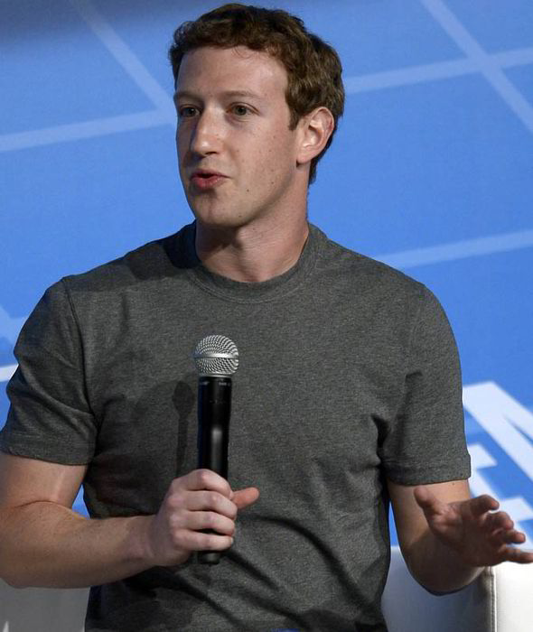

Any News I find interesting in the technology world will be posted here in some shape or form.
Mark Zuckerberg has been defending Facebook's $19bn (£11.4bn) takeover of messaging service WhatsApp - insisting that it is really worth more.

The boss of the social media giant, who was speaking at the Mobile World Congress show in Barcelona, said the company was a "strategic fit".
Asked about the price tag, Mr Zuckerberg, 29, said: "I just think that by itself it is worth more than $19bn. "I mean it is hard to exactly make that speech today because they have so little revenue compared to that number."But the reality is that there are very few services that reach a billion people in the world. They are all incredibly valuable, much more valuable than that. "I could be wrong. This could be the one service that gets to a billion people and ends up not being that valuable. I don't think I am."
It was revealed earlier at the show that WhatsApp - which boasts 450 million users - will add voice calls to its messaging service within the next four months. WhatsApp chief executive Jan Koum made the announcement less than a week after his firm was bought in the shares and cash deal. The move threatens to slash the amount telephone providers make from voice calls - a revenue stream already declining by 5% a year, according to research by Ovum.WhatsApp currently allows users to send voice notes with their messages but the new service brings live calls to the app for the first time. Android and iPhone users will get the functionality first, with those on Blackberry or Windows phones forced to wait until later this year. During a keynote speech at MWC, Mr Koum said: "We are driven by the mission that people should be able to stay in touch anywhere and affordably. "Our goal is to be on every mobile phone in the world." Meanwhile, Mr Koum said there were "no planned changes" to WhatsApp's policy not to display adverts to its 465 million monthly users. The service is initially free of charge, with a 69p-a-year charge kicking in after the first 12 months.
- FaceBook has WhatsApp
- Nokia Eats Android Flavoured Pie
- The Ubuntu Phone Is Here
- IGN
- Playstation
- XBox
- Sky News
- BBC
- NY Times
- Wired
- Tech Republic
- CNET